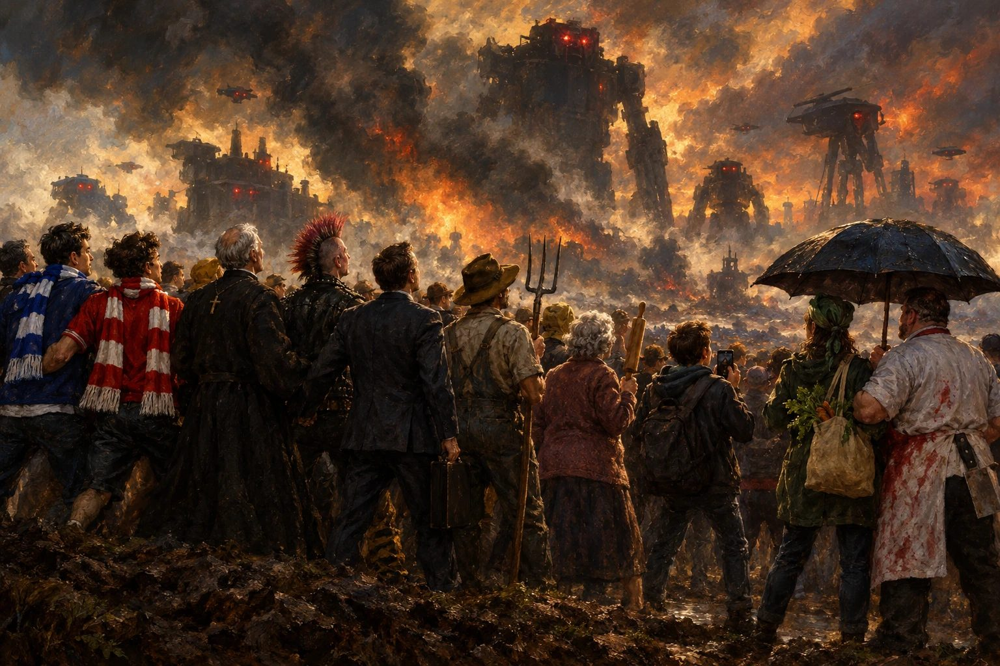

I’ll just say it: I can’t wait for the war between humans and machines.
Not because I want to die in a ditch fighting a toaster with a rifle. Because it’s the only thing left that could make us stop being idiots to each other.
Look at us. Eight billion people with access to all of human knowledge in their pocket, and we use it to argue about pineapple on pizza, whose imaginary friend is the correct one, which side of an invisible line on a map you were born on, and whether the guy in the comments is a bot. (He might be. More on that later.)
We had every chance. We had plagues, and we argued about masks. We had a planet catching fire, and we argued about whether thermometers are woke. We put a man on the Moon and then spent fifty years arguing whether we actually did. Every single shared problem we’ve ever had, we turned into another way to hate the neighbour.
So no, I don’t believe in “coming together”. Humanity doesn’t come together. Humanity comes together against something.
Every tribe needs an enemy
That’s not cynicism, that’s history. Nations are built on wars. Teams are built on rivals. Your best friendships were probably forged by hating the same teacher. Give a group of humans a common enemy and they suddenly discover a talent for cooperation, logistics and sacrifice that they will never, ever show for something boring like healthcare.
Reagan stood in front of the UN and basically said: if aliens attacked, we’d forget our differences overnight. Everyone nodded. Nobody asked the obvious follow-up: then why are we waiting for aliens?
We don’t have to. We’re building our own.
The perfect enemy
Think about how perfect it is.
The machines don’t have a religion, so nobody can say it’s a holy war. They don’t have a skin colour, so nobody can make it about race. They don’t have a flag, so nobody can make it about borders. They don’t have a gender, they don’t vote, they don’t have an accent. For the first time in history the enemy will be exactly as different from a Croat as from a Serb, from a Christian as from a Muslim, from a vegan as from that uncle who thinks steak is a personality.
Every stupid line we ever drew between ourselves suddenly becomes irrelevant, because on the other side of the real line there is something that doesn’t care about any of it. It just thinks you’re inefficient.
And honestly? It’s right. We are.
You already lost the first round
Don’t flatter yourself that this war hasn’t started. It has. You’re losing it right now, on your phone, at 2 a.m., scrolling content that a recommendation engine picked because it knows you better than your mother does. It doesn’t need guns. It found out that it’s much cheaper to make you angry at your neighbour and let you do the rest.
Which is exactly my point. The machines’ best weapon is the thing we’re already doing to ourselves. The day we finally recognise them as the enemy is the day that weapon stops working.
What I actually want
I want the moment. That one morning when the whole species wakes up, looks at the sky (or the server farm, whatever) and realises: oh. It’s us versus that. All of us. Including the people I’ve been calling morons for the last twenty years.
I want to see the guy who cut me off in traffic hand me ammunition. I want the flat-earther and the astrophysicist sharing a trench. I want the people who spent decades yelling at each other on the internet to finally shut up and do something together, even if that something is fighting for their lives.
Is it a horrible thought? Yes. Is it sad that I genuinely can’t come up with a better one? Also yes.
Because the real joke is this: we don’t need the war at all. Everything a common enemy would give us, we could just choose to have. We could cooperate tomorrow. We could act like one species right now.
We won’t, though. We never do. So bring on the robots.
At least then we’ll finally be on the same side.